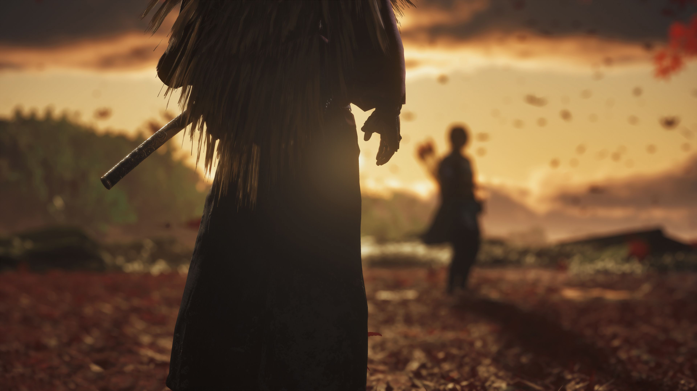
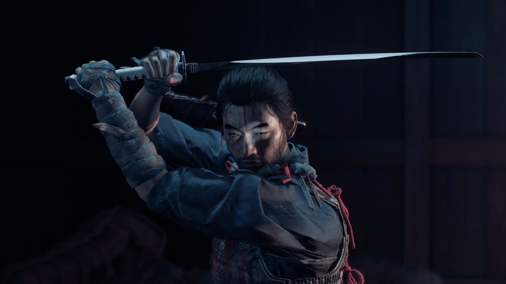

O Caminho do Samurai
No final do século XIII, o império mongol devastou nações inteiras em sua campanha para conquistar o Oriente. A ilha de Tsushima é tudo o que resta entre o Japão continental e uma enorme frota de invasão liderada pelo implacável general Khotun Khan.
À medida que a ilha queima após a primeira onda do ataque mongol, o guerreiro samurai Jin Sakai permanece como um dos últimos sobreviventes de seu clã. Ele está determinado a fazer o que for preciso, a qualquer custo, para proteger seu povo e recuperar seu lar.

A Experiência
Descubra os caminhos que você deve trilhar para libertar Tsushima.

Aço e Sombra
Desafie oponentes em confrontos diretos de katana com postura samurai tradicional, ou domine a arte do Fantasma operando nas sombras com táticas furtivas e armas não convencionais. O seu propósito é um só: adaptar-se para vencer.

O Vento Guia
Explore um mundo aberto deslumbrante e imersivo. Deixe que o vento e a natureza guiem Jin por campos floridos, santuários ancestrais e vilas ocupadas. Cada detalhe visual foi moldado para fazer você viver o coração do Japão Feudal.

Classificação Indicativa
Não recomendado para menores de 18 anos. Contém violência extrema, mutilação e linguagem forte.